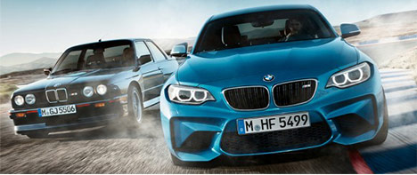
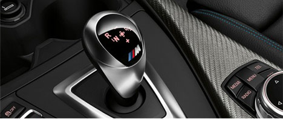
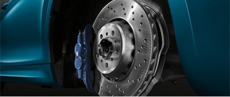

The design and idea behind the first-ever BMW M2 Coupé stem from the historical
roots of BMW M GmbH. The vehicle combines top sporting prowess and classic
rear-wheel drive with the precision and agility of a modern M automobile.
Characteristic front and rear bumpers optimize air flow and aerodynamics.
The sportily attuned suspension and a powerful M TwinPower Turbo inline
6-cylinder gasoline engine ensure breathtaking performance
Power in SAE hp @ rpm
Max. torque in lb-ft @ rpm
Acceleration 0–100 km/h in s
Top speed in km/h
365 @ 6,500
343 @ 1,400 – 5,560
4.5 (4.3)
250
Racing Characteristics
The driving sensation in the BMW M2 Coupé
is based on highly developed technology that
was tested under the most extreme conditions
possible. The results is an authentic driving
experience only offered by M Automobiles:
with nearly 50:50 axle load distribution, an
outstanding chassis and equipment with
racing capabilities.

7-speed M DCT
Shift gears without losing power or slowing
down: the 7-speed M double-clutch transmi-
ssion with Drivelogic. Gears can be changed
automatically or manually using the gearshift
paddles on the steering wheel, or the gear
lever. Launch Control guarentees maximum
acceleration from a standing start.

M Compound Brakes
Thanks to the use of various materials,
M compound brakes achieve outstanding de-
celeration values and are extremely stable
and highly durable. They also weigh less,
which has a positive impact on agility,
dynamics and acceleration. The Blue metallic
brake callipers with the M logo are the hall-
mark of these high-performance M-specific brakes.

Active M Differential
The Active M Differential optimizes
traction and driving stability when changing
lanes or accelerating out of curves, when
making curves at high speeds or on roads with
uneven surfaces. Traction is optimized via an
electronically controlled device that reduces
the difference in revolution speed between
the rear wheels.